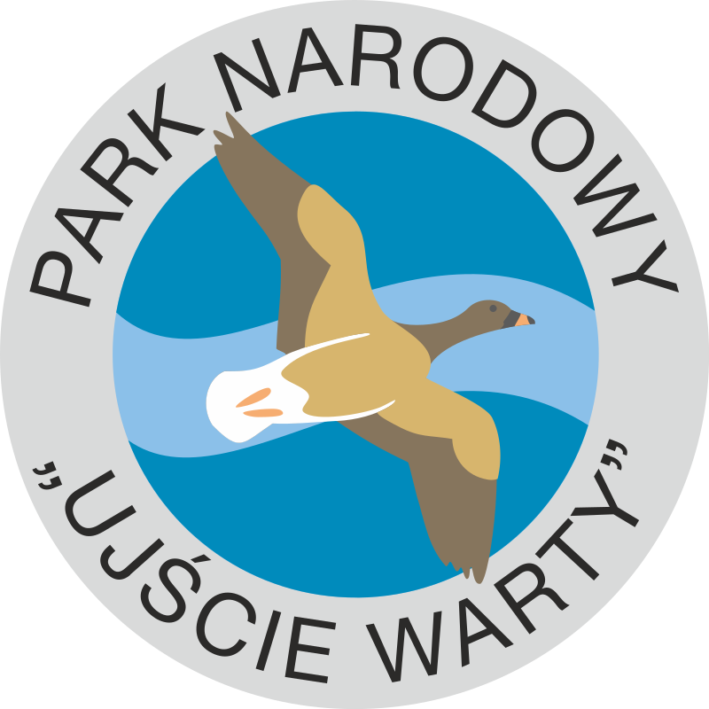

Park Narodowy "Ujście Warty"
Utworzono go w roku 2001, a jego powierzchnia wynosi 80,74 km². Jest najmłodszym parkiem narodowym w Polsce, którego siedziba znajduje się w Chyrzynie, nieopodal Kostrzyna nad Odrą. Obejmuje rozlewiska tworzone w dużej mierze przez rzekę Postomię, u ujścia Warty do Odry. Symbolem parku jest gęś zbożowa. Utworzono go dla ochrony jednej z najważniejszej w Polsce ostoi ptaków wodnych i błotnych, na którą składają się unikatowe tereny podmokłe, łąki oraz pastwiska. Na terenie parku można spotkać aż 245 gatunków ptaków, z czego 174 lęgowych, a 26 gatunków należy do gatunków ginących. Znajduje się tutaj największe zimowisko arktycznego gatunku łabędzia krzykliwego, oraz około 30 bielików.